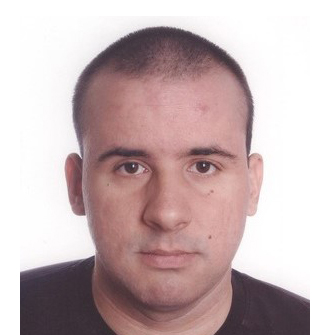

Projektni tim

Sandi Ljubić
Prof. dr. sc. Sandi Ljubić, voditelj projekta, ima bogato iskustvo u području HCI. U svom znanstvenostručnom radu, većinom se fokusira na empirijski pristup području interakcije čovjeka i računala, s posebnim naglaskom na domenu mobilnih aplikacija, metode unosa teksta, korištenje senzora za obogaćivanje interakcije, prediktivno modeliranje i vrednovanje interaktivnih sustava te inženjerstvo upotrebljivosti. U ulozi voditelja projekta, organizira, nadgleda i sudjeluje u svim fazama i aktivnostima projekta.
Alen Salkanović
Dr. sc. Alen Salkanović je poslijedoktorand koji istražuje područje interakcije čovjeka i računala, s posebnim osvrtom na mobilnu domenu i ulogu osjetila u augmentaciji interakcije s mobilnim uređajima. Njegov doktorski rad bavi se biometrijskim odrednicama potpisa i rukopisa koji se izvode na zaslonima osjetljivima na dodir, pri čemu podatke prikuplja izvornim apparatusom zasnovanim na fuziji senzora. S obzirom na stečeno iskustvo tijekom rada na doktoratu, radi na implementaciji eksperimentalnog postava, organizaciji i provedbi eksperimenata te razvoju prototipnog sustava autentikacije, a involviran je i u suradni razvoj i vrednovanje modela za prepoznavanje korisnika.

Luka Batistić
Dr. sc. Luka Batistić doktorirao je na istraživanju primjene strojnog učenja i umjetne inteligencije u području interakcije čovjeka i računala, konkretno na temi sučelja mozak-računalo. S obzirom na svoje iskustvo u provođenju empirijskih istraživanja u području HCI, analizi vremenskih signala te primjeni metoda AI, involviran je i u pripremi eksperimenata za prikupljanje podataka i u fazi suradnog razvoja i vrednovanja modela dubokog učenja za prepoznavanje korisnika.

Diego Sušanj
Izv. prof. dr. sc. Diego Sušanj radi na Tehničkom fakultetu Sveučilišta Jurja Dobrile u Puli, a njegovi istraživački interesi uključuju biometrijske sustave, strojno učenje, analizu podataka, distribuirane algoritme i enkripciju. Stoga, involviran je u aktivnostima koje se odnose na analizu podatkovnih skupova, predobradu podataka, te razvoj i vrednovanje modela dubokog učenja.
Žiga Emeršič
Doc. dr. sc. Žiga Emeršič, s Fakulteta za računarstvo i informatiku Sveučilišta u Ljubljani, renomirani je stručnjak u području biometrije s velikim iskustvom korištenja tehnika strojnog / dubokog učenja u tom području. S obzirom na svoju ekspertizu, posebno je aktivan u fazi predlaganja, testiranja i vrednovanja različitih arhitektura neuronskih mreža i ostalih metoda u postupku razvoja modela za prepoznavanje korisnika.